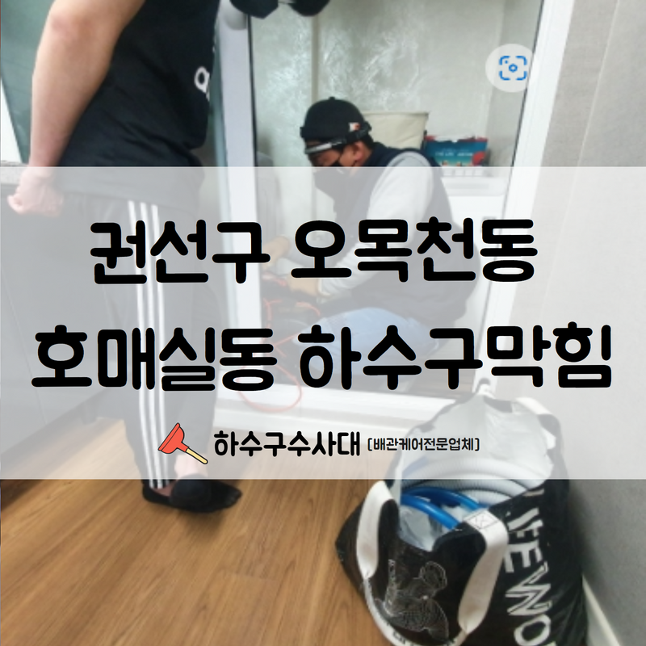
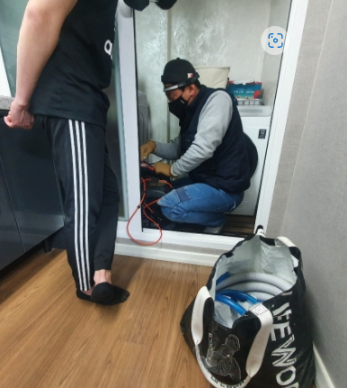
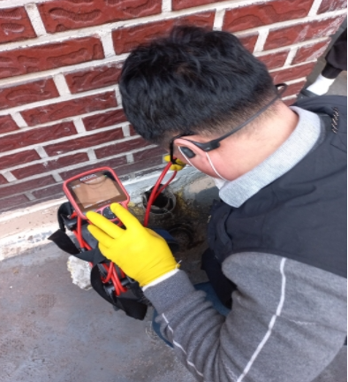
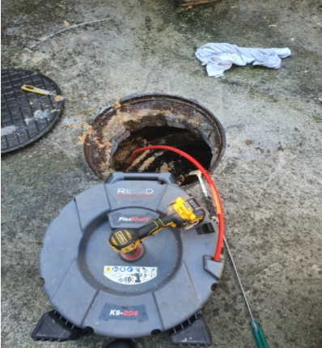
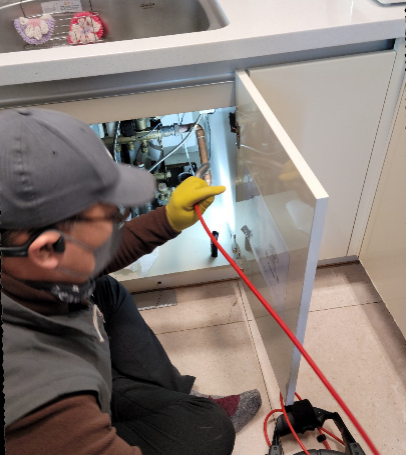
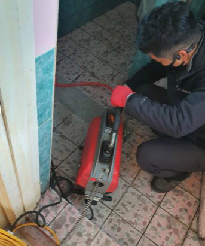
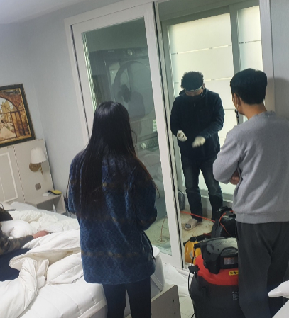

🏠 권선구 오목천동 호매실동 하수구막힘 빠른 원인 파악과 함께 수리 완료하였습니다!
수원 하수구막힘 전문 시공 후기

📋 작업 개요
- 위치: 수원
- 서비스 유형: 하수구막힘, 배관막힘, 역류해결, 배관청소, 고압세척
- 작업 일시: 2022. 7. 11. 23:01
- 업체명: 하수구수사대 (010-5615-2118)
🔍 문제 상황
안녕하세요.하수구수사대 입니다.반갑습니다.
요즘같이 비가 자주 많이 내리는 날씨에는 우수관이 막혀서 문제가 발생하기도 합니다. 우수 배관이란 비로 생긴 물을 배수하는 시설입니다.
지금 같은 장마철에는 문제가 생겨 피해가 생길 수 있으니 문제가 생기기 전에 점검해 보시는 것을 추천드립니다.
권선구 오목천동 호매실동 하수구막힘 현장을 포스팅하겠습니다.
권선구 오목천동 호매실동 하수구막힘 으로 고객님이 전화를 주신 현장입니다. 고객님의 댁은 가정집으로 세탁실 겸용으로 이용하고 계시던 베란다에 하수구 막힘이 발생하셔서 연락을 주셨습니다.

🔎 원인 분석
💡 전문가 진단: 권선구 오목천동 호매실동 하수구막힘 현장을 포스팅하겠습니다.
평소에 세탁기를 베란다 쪽에 두시고 물은 배수구로 세탁기 호스를 통해서 흘려보내고 계신다고 하셨습니다. 그러던 중 언제인진 모르지만 배수가 약해지는 것을 느끼셨고 어느 날 배수가 완전히 막혀 안되면서 저희 하수구수사대에 연락 주셨다고 하셨습니다.
빠른 원인 파악을 진행하였습니다.
권선구 오목천동 호매실동 하수구막힘 현장에 도착해서 베란다의 상태를 확인해 보니 세탁물이 역류해 엉망이 되어있었습니다. 고객님의 불편을 빠르게 처리해 드리기 위해 내시경을 통해 문제의 원인을 찾기 시작했습니다.
현장마다 각각 배관의 모양과 구조, 구경 등이 다르기 때문에 내시경을 통해서 문제점을 확인해야 합니다. 내시경을 배수구로 넣어 배관을 상태를 확인했습니다. 내시경은 카메라와 라이트가 달려있어 좁고 어두운 배수 구안을 보기에 최적화된 장비라고 할 수 있습니다.
내시경을 통한 원인 파악을 진행하였습니다.
배관의 내부는 좁고 깊은 형태라 우리의 눈으로는 문제점을 확인하기 어렵기 때문에 내시경을 이용해 배관 안의 깊은 곳까지 확인할 수 있습니다.

🔧 작업 과정
고객님의 배란다 배관 상태는 예상보다 심각한 상황이었습니다. 여러 가지 이물질과 기름 덩어리인 슬러지가 뭉쳐져 전체적으로 꽉 막혀있었습니다.
권선구 오목천동 호매실동 하수구막힘 현장처럼 가정집 하수구는 외부 하수구나 상가와 같은 큰 건물의 하수구와는 다른 구조나 형태를 한 경우가 많아 작업 이전에 자세하게 확인해서 배관에 피해를 주지 않게 작업하는 것이 중요합니다.
일반 가정집의 하수구의 경우에는
고압세척이 가능한 샤프트가 있어 그걸 통해 권선구 오목천동 호매실동 하수구막힘 현장을 해결하도록 하겠습니다. 배수구 입구로 샤프트 호스를 연결해서 여러 번의 작업을 통해 내부의 이물질을 부셔서 제거해 줍니다. 이 과정은 여러 번 해주어야 해서 끈기를 갖고 작업하는 것이 중요합니다.
작업 과정 중에도 내부를 내시경으로 확인해가며 문제 해결이 되고 있는지 수시로 봐야 제대로 된 해결이 가능합니다. 이 현장은 오랜 시간 진행되온 문제점이어서 이물질 덩어리가 아주 단단하고 정도도 심각해서 악취도 아주 심했습니다.
배수관 내부의 발생하는 악취는 부패되어 있어 냄새가 더욱 심한 경우가 많습니다.
배관의 냄새는 배관 안에만 있는 것이 아니라 공기를 따라 우리의 생활공간으로 풍겨오기 때문에 악취를 유발하는 배관의 문제를 빠르게 해결하는 것을 추천드립니다. 여러 차례 고압세척을 진행해 하수구 내부에 막혀있던 이물질을 모두 제거해 드렸습니다.
하수구 내부가 말끔해진 것을 보니 이 이상 막힘 걱정 없이 세탁실과 베란다를 이용하실 수 있겠습니다. 설명을 들으시면 간단한 작업처럼 보이시겠지만 오랜 시간 동안 이물질이 쌓여오고 있는 하수구를 한번 청소해 주시면 쾌적한 배관을 사용하실 수 있습니다.


✅ 작업 완료
이번 권선구 오목천동 호매실동 하수구막힘 현장도 말끔하고 신속하게 해결해 드렸습니다.
하수구에 문제가 생기셨을 땐 방치하시지 마시고 전문가를 통해서 해결하셔서 쾌적한 생활하시기 바랍니다.
경기도 수원시 권선구 매송고색로533번길 7 상가동 B층 01호 298




⚠️ 하수구 배관 막힘 예방 및 관리 가이드
- ✅ 머리카락, 비닐, 물티슈 등 물에 분해되지 않는 이물질은 하수구 유입을 절대 금지해 주세요.
- ✅ 하수구 거름망을 씌우고 모여진 이물질은 주기적으로 쓰레기통에 바로 비워주셔야 합니다.
- ✅ 배관 노후가 심할 경우 이물질이 더 쉽게 걸리므로 주기적인 배관 세척(고압세척 등)을 권장합니다.
- ✅ 작업 후 1년 이내 재발 시 하수구수사대에서 무상 A/S 보증 서비스를 제공합니다.
💡 핵심 정리
- 확실한 장비 작업(내시경 점검 및 샤프트 스케일링)으로 원인을 뿌리 뽑습니다.
- 작업 후 1년 이내에 동일한 부위 재발 시 100% 무상 A/S 서비스를 보장합니다.
- 서울 · 경기 · 인천 전 지역에 24시간 언제든 긴급 출동할 수 있도록 항시 대기 중입니다.
❓ 자주 묻는 질문 (FAQ)
🚨 수원 하수구막힘 문제로 고민이신가요?
정확한 원인 진단과 확실한 시공으로 재발 없는 해결을 약속드립니다.
24시간 긴급 출동 | 서울 · 경기 · 인천 전지역 | 1년 내 재발 시 무상 A/S